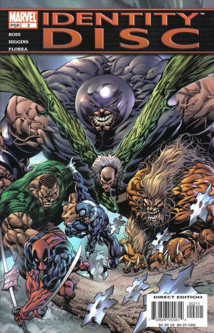
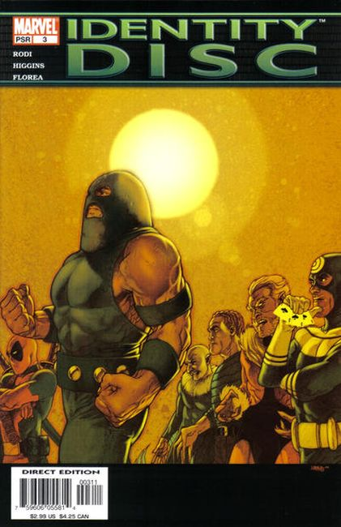
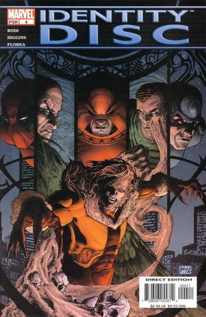
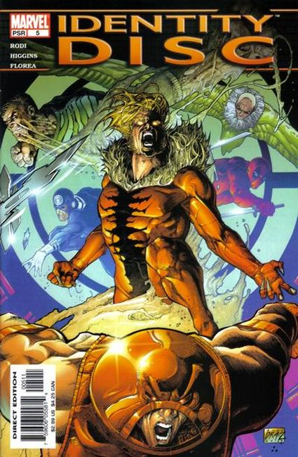

When six of Marvel's most violent and cunning villains join forces, the fate of every hero in the world is at stake. Sabretooth, Bullseye, the Juggernaut, Deadpool, Sandman and the Vulture -- are forced to work together by a mysterious agent who somehow knows every dark and dirty secret in their violent lives. Their mission: to retrieve the nearly priceless Identity Disc -- purported to contain the true identities, the home addresses and even the credit reports of every hero in the Marvel Universe. To obtain the disc, hidden deep in the bowels of a practically impenetrable A.I.M. terrorist base, this agent will need an army. Or six super-villains. But how long can these psychopaths work together before the chaos begins?

When a sinister collection of six powerful and deadly villains are blackmailed by a mysterious woman, they're forced to form an uneasy alliance to save the lives of their loved ones. But can this group, which includes Sabretooth, Bullseye, Deadpool, and the Juggernaut, work together to secure a mysterious disc before self-destructing?

Six of Marvel's deadliest villains have been blackmailed into pulling a job. On an apparent suicide mission, the team must break into a heavily guarded, nearly impenetrable A.I.M. terrorist base and retrieve a small disc that can literally shift the balance of power in the world. On the disc: The civilian identities of every costumed hero on Earth. But how will the team's world-class size, brawn and savagery fare against the enemy's sheer numbers?

Blackmailed into the service of a mysterious woman, the team of deadly villains embarks on a suicide mission to retrieve the priceless Identity Disc--rumored to contain the secret identities of every hero in the Marvel Universe ? from the bowels of an A.I.M. terrorist base in the heart of Manhattan.

Faced with overwhelming odds, the villains are forced to put their lives on the line to secure the Identity Disc! Will they succeed...or will they pay the ultimate price? The dramatic conclusion to the series!